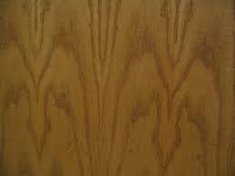

Secondo Progetto

Modello multi materiale di un angioletto, progettato da Pellizzari Luca e Baradel Luca
Modifica Materiali
| Materiali | ||
|  |  |
|
"Putto è un termine che nel campo dell'arte indica un bambino nudo, quasi sempre di sesso maschile e spesso raffigurato con le ali.
La figura del putto è stata utilizzata in raffigurazioni allegoriche o per fini puramente decorativi in forma ripetitiva.
Dall'antichità ad oggi sono stati utilizzati per raffigurare la figura infantile di Eros, il dio dell'amore, e in questa forma è conosciuto anche come "erote", "cupido" o "amorino". Esempi di tali raffigurazioni si trovano già in sculture e rilievi greci o in pitture di Pompei.
Già in epoca romana assume spesso un valore soprattutto decorativo, con scene di putti impegnati in scherzosi combattimenti, competizioni sportive, riti religiosi o in altre attività (pesca, vendemmia, attività produttive). Un carattere ancora più marcatamente decorativo assumono i putti sorreggenti ghirlande, per esempio nei sarcofagi."